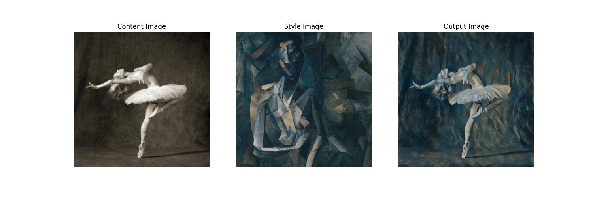
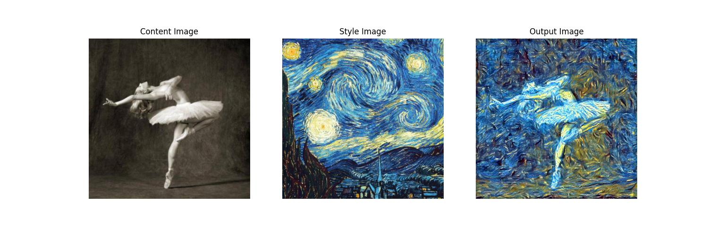
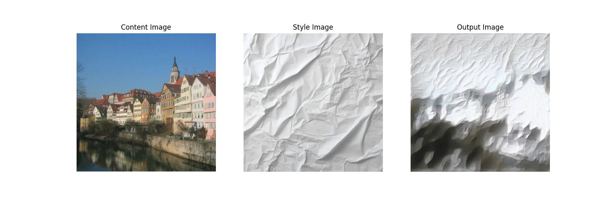
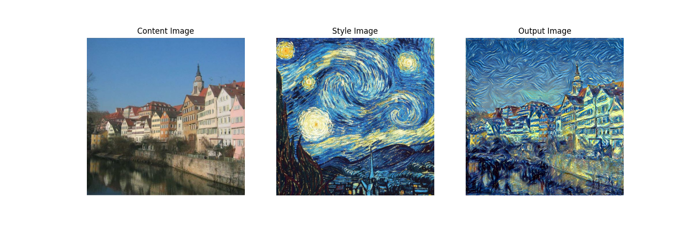

Recreating the algorithm from Gatys et al.

Neural Style Transfer (NST), introduced by Gatys et al. in 2015, combines the structure of one image with the textures, colors, and patterns of another. A pretrained convolutional neural network (CNN) gives us a way to represent these properties separately.
The generated image minimizes two losses: content loss keeps its structure close to the content image, while style loss matches the style image's textures and patterns.
$$ \mathcal{L}_{\text{total}} = \alpha \cdot \mathcal{L}_{\text{content}} + \beta \cdot \mathcal{L}_{\text{style}} $$Early CNN layers capture details such as edges, while deeper layers capture higher-level structure. We measure content difference by comparing feature maps from one of those deeper layers.
Let $F^l$ be the generated image's feature map at layer $l$, and $P^l$ the content image's feature map at the same layer. Content loss is their squared error.
$$ \mathcal{L}_{\text{content}} = \frac{1}{2} \sum_{i,j} \left( F_{ij}^l - P_{ij}^l \right)^2 $$Style spans several network layers. We represent it with a Gram matrix, which records correlations between feature maps. Those correlations capture which features activate together and therefore describe texture and pattern.
For one layer, style loss is the squared error between the generated image's Gram matrix ($G^l$) and the style image's Gram matrix ($A^l$).
$$ \mathcal{L}_{\text{style}}^l = \frac{1}{4 N_l^2 M_l^2} \sum_{i,j} \left( G_{ij}^l - A_{ij}^l \right)^2 $$A weighted sum across layers captures style at several scales, from fine textures to broad brush strokes.
$$ \mathcal{L}_{\text{style}} = \sum_{l} w_l \mathcal{L}_{\text{style}}^l $$


The code and reproduction instructions are on GitHub.